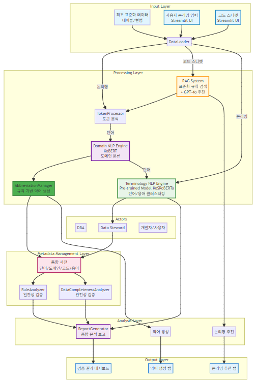
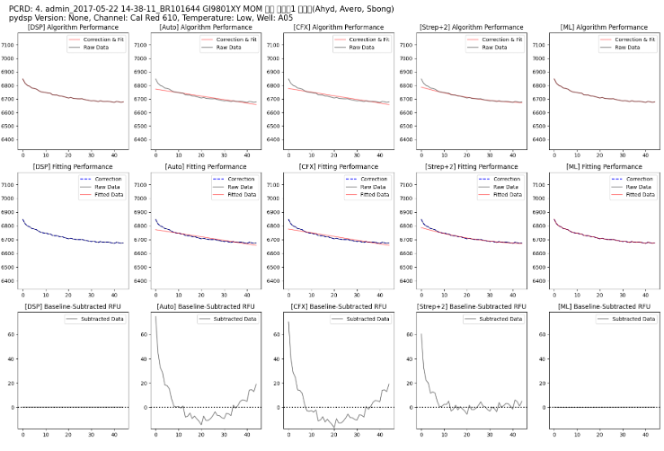
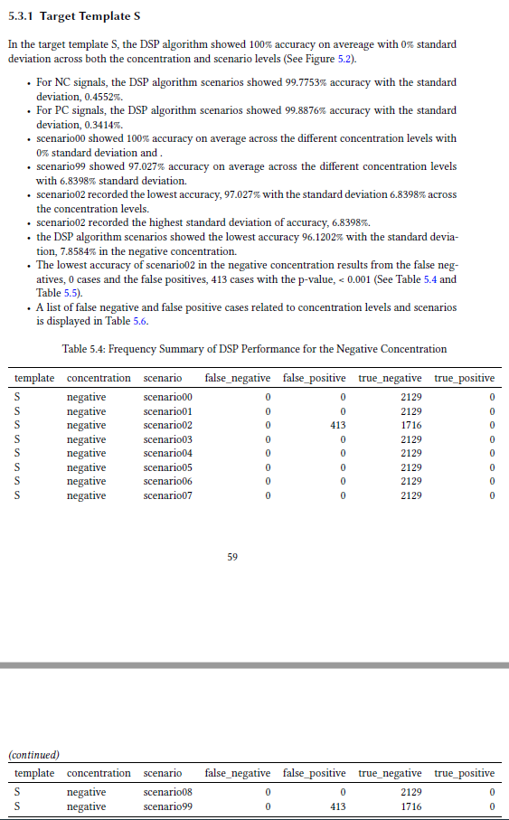
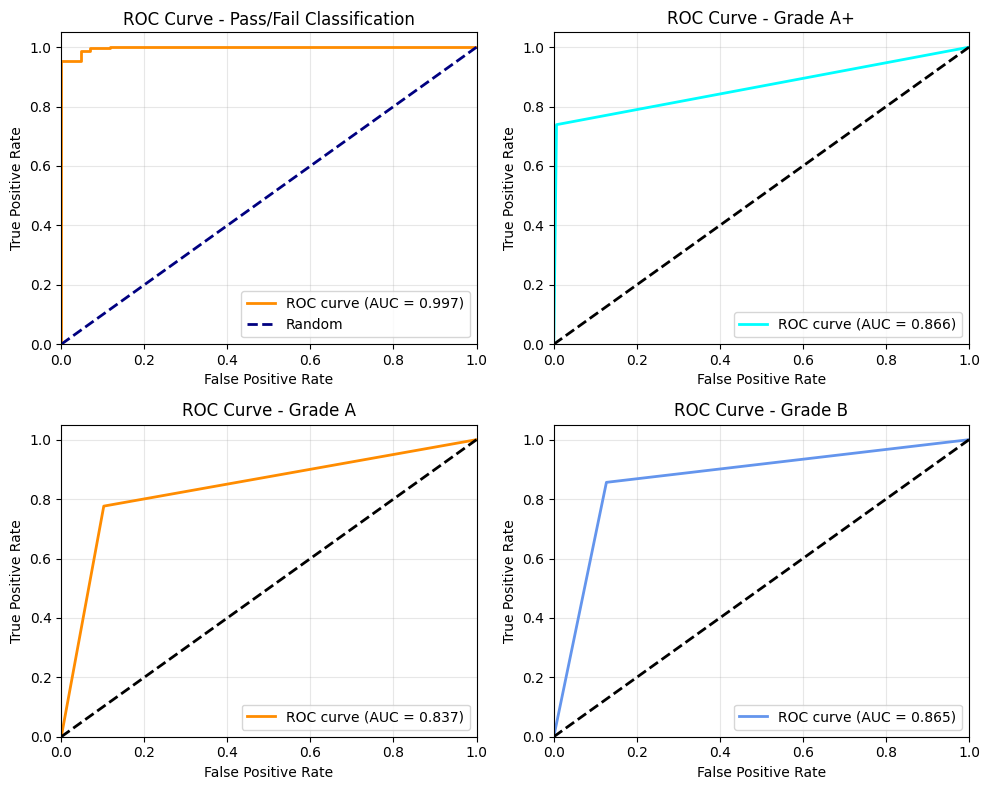

Description
Project Description
Due to security concerns, it is difficult to display the data used in this project. This project was not only a project I worked at Columbia University Irving Medical Center, but also used for my graduate school graduation research practicum. Although the goal of each step was different, the subject matter is the same, so I will combine them to explain the project. 보안 문제로 인해 이 프로젝트에서 사용된 데이터를 공유하기 어렵습니다. 이 프로젝트는 Columbia University Irving Medical Center에서 근무했던 프로젝트 였던 것 뿐만 아니라 제 대학원 졸업 연구 발표용으로도 사용됐습니다. 각 단계에서의 목표는 달랐지만 주제는 같으므로 통합해서 설명하겠습니다.
1 [자연어 처리(NLP)를 활용한 Data Governance 시스템 단계적 구축]
1.1 프로젝트 개요
- 대내적 의의: 전사 자동화 시스템 구축의 시발점
- 실험 자동화, 시약 개발 자동화, 분석 자동화, 의사 결정 자동화
- 대외적 의의: 글로벌 기술 공유 사업의 시발점
- Microsoft, Springer Nature, KPMG, 각 국 정부기관 및 기업 등
- 총괄장 수명 프로젝트
- 기간
- Phase1: 2024.12 ~ 2025.09 (진행중)
- Phase2~3: 2025.10 ~ 2027.09
- 역할: Technical Lead
- 표준화 체계 구축, Governance Architecture 설계, 표준화 프로세스 시스템 구축
- 1명의 Junior Data Scientist 멘토링: 문제정의, 통계 및 데이터 분석 역량 강화
- 12명의 IT/BT 개발자 멘토링: 데이터 거버넌스 70% 이해도 달성
1.2 주요 문제점 및 도전과제
- 문제점
- 16개 부서 53개 DB의 메타데이터 불일치로 인한 데이터 활용도 저하 문제
- 데이터 거버넌스 체계 부재
- Data Silo 현상, 데이터 통합 및 검증 체계 부재
- 도전과제
- 표준화 체계 구축
- 문제: 독립적으로 개발된 시스템 및 외주 개발 시스템 통합 불가
- 해결방안: 표준화 현황 분석 및 표준화 프레임워크 확립
- 데이터의 품질 평가 자동화
- 문제: 영문 약어 생성 규칙 구현의 어려움 & 표준화 KPI (품질 평가 지표) 부재
- 해결방안: 계층적 Rule Engine 설계 & 원칙 기반 평가 지표 개발
- BT & IT 용어 표준화
- 문제: (관용어 vs 표준화 원칙) & (SI 단위계 vs 업계 관행)
- 해결방안: 업무 전문가와의 협업을 통한 사전 구축
- 조직내 낮은 Data 성숙도 및 교육의 어려움
- 문제: 임원진과 실무진의 막연한 두려움 & 표준화 지식 부족
- 해결방안: 추상적 개념 구체화, 동기부여 및 교육
- 표준화 체계 구축
1.3 솔루션 설계 및 전략

- Phase 1: Feasibility Test
- 현실적 범위 설정 + 단계적 표준화 진행
- 표준화 프레임워크 구축 (원칙 + 표준 사전 + 품질 평가)
- 표준화 프로세스 반자동화 시스템 구축: Hybrid Rule Engine
- Rule Based 표준화 프로세스 구축
- Data Driven (딥러닝을 활용) 표준화 프로세스 병목 현상 해결
- Phase 2 ~ 3: 표준화 범위 확장
- DB 확장 시 표준화 프로세스 시스템 확장
- MS Azure Data Factory & Databricks 연동
- 거버넌스 체계 구축, 표준화 교육 및 캠페인 진행
- 표준화 모니터링 시스템 구축
- 자동화 워크 플로우 구축
- 데이터 활용방안 모색
1.4 기술 스택 및 요구 역량
- 데이터 처리: Python (pandas, numpy, regex, NLTK, konlpy)
- 자연어 처리: Pytorch (Hugging Face, Transformer, BiLSTM + Attention, AlBERT)
- 시각화 & 모니터링: Streamlit, matplotlib/seaborn, plotly
- RAG: Langchain, OpenAI, Hugging Face
- 워크플로우 자동화: Apache Airflow
- 기술적 역량
- 복잡한 비즈니스 규칙의 알고리즘 설계 능력
- 딥러닝 모델 설계 및 훈련 데이터 생성 능력
- 업무적 역량
- 데이터 표준화 프레임워크 구축 (표준화 원칙 및 표준 사전 구축)
- 도메인 전문가와의 협업 및 요구사항 분석
- 표준화 정책 수립 및 이행 관리
- 경영진 및 실무진과의 커뮤니케이션 능력
1.5 결과 및 성과
- 정량적 성과: 데이터 품질 향상
- 표준화 체계 수립: 0% → 100% (최초 구축)
- 메타데이터 완전성: 29.6% → 100% (80.4% 개선)
- 메타데이터 일관성: 8.4% → 100% (91.6% 개선)
- 효율성 개선
- 물리명 규칙 검증 시간: 수동 4시간 → 자동 0.73초 (98% 단축)
- 약어 생성 정확도: 수동 생성 63% → 자동 100% (37% 향상)
- 딥러닝을 활용한 표준화 프로세스 간소화: 도메인 분류 자동화
- 시스템 구축 성과
- 품질 평가 프로그램 핵심 모듈 8개 개발
- 표준화 세부 규칙 200여개 생성
- 품질 지표 16개 개발 및 자동 산출 체계 구축
- 자연어 처리(BiLSTM)를 활용한 용어별 도메인 그룹 분류
- 용어 중복 방지, 도메인 항목 관리 및 도메인 그룹 관리
- 예시: “USER_ID”, “고객번호”, “제품코드”, “비밀번호”, 등
- 자연어 처리(AlBERT, DBSCAN)를 활용한 용어 Clustering
- 유사 용어 그룹핑: 금칙어 관리 및 표준안 관리
- “사용자ID”, “UserID”, “User”, “user_id” 등 금칙어 관리
- 코드를 입력받아 LLM을 이용한 논리명 추천
- 논리명을 입력받아 물리명 추천
- 정성적 성과
- 조직 차원: 16개 부서 통합 데이터 표준 확립
- 데이터 기반 의사결정 지원 체계 마련
- 표준화 정책 수립 및 거버넌스 체계 구축
1.6 기대효과
- 단기 기대효과
- 운영 효율성
- 데이터 통합 작업 시간 50% 단축
- 신규 시스템 구축 시 표준 적용 자동화
- 데이터 품질 이슈 사전 예방 체계 확립
- 비즈니스 가치
- 데이터 표준화 체계 구축으로 데이터 활용도 향상
- 부서 간 데이터 공유 활성화
- 규제 대응 및 감사 준비 시간 단축
- 실험 자동화 시스템 구축
- 실험 데이터 모니터링
- 글로벌 기술 공유사업 본격화
1.7 추후 과제
- 표준화 범위 확대
- Airflow를 활용한 자동화 워크플로우 구축
- 표준 사전 및 DB 메타데이터 데이터베이스 연동
- 모니터링 및 성능 최적화
2 [Real-Time PCR 진단 시스템을 위한 지능형 신호 처리 프레임워크]
2.1 프로젝트 개요
- Rule Based 진단 알고리즘을 Data Driven 알고리즘으로의 점진적 개선
- 기존 rule-based 알고리즘의 한계로 인한 다양한 PCR 신호 패턴 대응 부족
- 표준화되지 않은 baseline fitting 알고리즘 사용으로 인한 일관성 문제
- 진단 정확도 향상 및 위양성/위음성 결과 최소화
- 기간: 2024.01 - 2024.07 (6개월)
- 팀 구성: 3명 데이터 사이언티스트, 2명 데이터 엔지니어, 2명 생물학자
- 역할: Project Manager & Data Scientist
- 참여 인원: 3명의 데이터 사이언티스트, 2명의 데이터 엔지니어, 2명의 생물학자
2.2 주요 문제점 및 도전과제
- 기술적 문제점
- 신호 노이즈 복잡성: 화학/광학/기계적 반응의 측정 불가능한 노이즈 패턴
- 알고리즘 분산화: 여러 baseline fitting 알고리즘 병존 및 소통 장애
- Gray Zone 신호: 시약 성능 및 환경 요인으로 인한 모호한 판독 구간 존재
- 운영적 도전과제
- 데이터 파이프라인 부재: 체계적인 신호 데이터 수집 및 분석 프로세스 미구축
- 성능 평가 기준 부재: 객관적인 알고리즘 성능 비교 메트릭 부족
- 주관적 신호 선별: 1년간 수동으로 특이 신호를 육안 식별하는 비효율적 프로세스
- 제약 조건
- 호환성 요구: Python에서 C++로의 원활한 포팅을 위한 최소 패키지 사용
- 이해관계자 다양성: 생물학자, 비전문가 임원 등 다양한 배경의 stakeholder 고려
- 적은 데이터 포인트: 제한적인 baseline 데이터에서의 robust 알고리즘 필요
2.3 솔루션 설계 및 전략
- 데이터 파이프라인 구축
- 다양한 PCR 신호 패턴 수집 및 전처리 자동화
- MuDT 전/후 신호 처리 분석 체계 구축
- 성능 평가를 위한 end-to-end 데이터 처리 워크플로우

- 알고리즘 비교 분석
- 1st Pannel [After BPN]: normalized Raw Data를 보여준다.
- 2nd Pannel [CFX]: (대조군1) 타사 기기전용 SW에 내재된 Black Box 알고리즘
- 3rd Pannel [DSP]: (대조군2) DS팀의 공식적으로 배포된 Legacy Rule-Based 알고리즘
- 4th Pannel [Auto]: (대조군3) 생물 실험자들이 사용하는 Legacy Rule-Based 알고리즘
- 5th Pannel [Strep+N]: (실험군1) N+1 번째 [DSP]를 보완용 Rule-Based 알고리즘
- 6th Pannel [ML]: (실험군2)본인의 특성방정식을 활용한 data driven ML 알고리즘
- Talyer Series에서 초월 함수를 다항식의 조합으로 근사할 수 있다는 점에서 착안
- 다항식 기저 함수를 사용한 선형 회귀로 데이터를 적합하는 방법을 시도
- feature space를 확장하고, 데이터 내 복잡한 비선형 관계를 모델링 가능
- 적절한 차수 선택과 정규화를 통해 baseline 신호에 적합
- 로그 정규화 > 기저 함수 > 특성 방정식 > 비용 함수 > 그래디언트 > Momentum > 예측 > 역정규화
- 시각화 중심 검증 체계: 비전문가를 위한 직관적 성능 평가
- 복수 신호 분석: 6개 알고리즘의 총체적 성능 비교
- 단일 신호 분석: 특이 신호에 대한 세부 성능 평가
- 신호 유형별 분석: 증가/감소/MuDT 특이 신호 패턴별 성능 검증
2.4 기술 스택
- 언어: Python (C++ 포팅 고려), Matlab (Legacy 알고리즘))
- 라이브러리: NumPy, Pandas (최소화 정책)
- 시각화: Matplotlib, Plotly
- 수학적 구현: 특성방정식, 신경망 (without Pytorch, Tensorflow, Keras)
2.5 결과 및 성과
- 알고리즘 성능 검증
- ML 알고리즘: White noise에 가장 근접한 차감 결과로 최우수 성능 입증
- 개선된 Rule-based: 기존 대비 특이 신호 처리 능력 향상
- Black Box 알고리즘: 업계 1위 타사 알고리즘과 성능 비교 완료
- 프로세스 개선
- 개발 프로세스 표준화: 시약 개발 시 일관된 알고리즘 적용 체계 구축
- 검증 체계: 정성적 평가 방법론을 통한 알고리즘 성능 검증 프레임워크
- 시스템 개선
- 표준화: 분산된 baseline fitting 알고리즘의 단일화 방향 제시
- 자동화: 수동적 신호 선별 과정을 체계적 파이프라인으로 대체
- 시각화 도구: 비전문가도 이해 가능한 직관적 성능 비교

2.6 기대효과
- 즉시적 효과
- 진단 정확도 향상: 위양성/위음성 결과 감소로 환자 안전성 제고
- 개발 효율성: 표준화된 알고리즘으로 시약 개발 시간 단축
- 품질 일관성: 단일화된 baseline fitting으로 제품 간 성능 편차 최소화
- 장기적 영향
- 규제 대응 강화: V&V 프로세스 기반의 알고리즘 검증 체계 구축
- 기술 경쟁력: Data-driven 접근으로 차세대 진단 알고리즘 기술 확보
- 확장성: 다른 진단 알고리즘 영역으로의 방법론 확산 가능
- 비즈니스 가치
- 시장 차별화: 업계 최고 수준의 신호 처리 기술 확보
- 리스크 관리: 진단 오류로 인한 법적/재정적 리스크 감소
- 혁신 문화: data-driven 의사결정 문화 확산의 기반 마련
3 [알고리즘 안전성 인허가 통계 분석 보고서 작성 반자동화]
3.1 프로젝트 개요
- 북미 진단 시장 진출을 위한 알고리즘 안전성 검증용 통계 분석 문서 작성 반자동화
- 의료 장비 및 시약 제품의 글로벌 진출 시 각국 정부의 규제 사항 존재
- 시약의 안정성 검증
- 장비의 안정성 검증
- 진단 알고리즘의 안정성 검증
- EU: IVDR (In Vitro Diagnostics Regulation) 준수 필요
- 북미: FDA(미국) 및 Health Canada의 세계 최고 수준 엄격한 기준 충족 필요
- 기존 Software Engineering 방식보다 더 엄격한 Advanced Testing 요구
- 소프트웨어 및 알고리즘 규제 강화 추세
3.2 솔루션 설계 및 전략
- 알고리즘 안전성을 통계적으로 입증하는 시스템 기획
- Statistical Validation System 확립을 통한 통계적 분석 입증
- 알고리즘 리스크 정의 및 정량적 영향도 분석
- 코드 변화 대응을 위한 자동화 시스템 구축
- SGS 가이던스(EN62304) 참고
- FDA General Principles of Software Validation 문서 기반 시스템 확립
- Structural Testing (코드 기반) + Statistical Testing (통계 분석 기반) 병행
- Seegene BT(생명공학)와 IT(정보기술) 부문 협력 체계 구축
- 창의적 Testing Model 기획 및 Statistical Analysis Design 구체화

3.3 주요 도전과제 및 해결방안
- 문제: BT 부서 생성 데이터 입력 시스템 부재
- 해결: 실험 설계 파일, 의료기기 원시 데이터, 추출 데이터의 디지털화 시스템 구축
- 문제: BT 및 Data Science 팀 업무 기술서 부재
- 해결: 부서간 협업을 통한 업무 문서화 진행 및 기대 정답 기준 확립
- 5단계 Data QC Process 강화
- 오타 교정
- 결측치 처리
- 이상 데이터 처리
- 알고리즘 데이터 정합성 1차 검정
- 알고리즘 데이터 정합성 2차 검정
3.4 기술 스택 및 요구 역량
- 규제 지식: FDA Software Validation
- 통계 분석: Statistics (2-Way Repeated Measures ANOVA), Clinical Study Design
- 프로그래밍: R (Statistical Testing), Python (Engineering), Matlab (진단 알고리즘)
- 워크플로우: Apache Airflow
- 문서 자동화: Quarto
- 도메인 지식: Biology
3.5 결과 및 성과


- DSP Algorithm 결과물
- FDA 제출용 verification & validation report 초안 완성
- 문서화 시스템: 업무 소통 및 RDB 시스템 구축을 위한 자동화 시스템
- 데이터 관리 시스템: Data Quality Control System 구축
- FDA Validation Model: DSP 알고리즘 전용 Validation Model 확립
- 특허 발명: FDA Validation Model 관련 특허 출원
- 성능 평가 체계: 사내 최초 알고리즘 및 시약 제품 종합 성능 평가
- 리스크 관리 통계 분석: 시약/장비 고유 효과 및 교란 요인 위험 관리 분석
3.6 기대효과
- 북미 시장 진출을 위한 FDA 규제 대응 체계 확립
- 알고리즘 안전성에 대한 통계적 증명 체계 구축
- 문서 자동화를 통한 업무 효율성 향상
- 시약, 장비, 소프트웨어 및 알고리즘 통합 인허가 시스템 구축
4 [진단 장비 QC 프로세스 자동화 및 알고리즘 고도화 프로젝트]
4.1 프로젝트 개요
- PCR 진단 시약을 타사 장비 공급업체의 장비에 넣어 검출 결과를 얻는다.
- 진단 서비스 결과의 정확도를 위해 2 Phase 장비 QC 프로세스를 통해 장비의 성능을 평가한다.
- 프로젝트의 목적: 1. 부정확한 QC 알고리즘 개선 2. 투입 리소스가 많은 QC프로세스 과정을 간소화시켜 현업의 부담을 경감
- 프로젝트 기간: 9개월
- Two Step QC Process
- QC Step 1: 자사 시약에 맞게 장비간 신호 Scale Calibration
- QC Step 2: 장비의 성능을 평가하여 합격/불합격 분류 - 병목 현상 발생
- 문제점
- 엑셀을 이용한 수동검사, 비효율적인 데이터 및 장비 추적 관리
- 수동 검사 과정에서 신호의 증폭 크기에 따라 왜곡된 QC 결과 발생
- 기계 결함 및 휴먼 에러 구별 불가
4.2 솔루션 설계 및 전략
- Data Engineering: 산재된 Excel QC data ETL
- QC Step2의 장비 성능 평가 지표를 생성하여 장비 성능 측정 고도화
- 합격/불합격 분류 뿐만 아니라 장비 등급을 차등 부여하여 고객사에 차등 공급
- 시간에 따른 장비의 성능을 지속적으로 모니터링하여 장비의 성능 분석 및 life cycle 관리
- QC Process 간소화
- QC Step 1 데이터를 통해 QC Step 2 결과를 예측하는 딥러닝 모델 개발
- 예측 결과로 장비성능이 Fail로 확실시 되는 장비에 한해서 QC Step 2 검사 진행
- Web App 로 분석 결과 및 시각화 Dashboard 제공
- 실무 담당자가 데이터 업로드 하면 자동으로 분석 결과 제공
4.3 기술 스택 및 요구 역량
- 데이터 엔지니어링: QC Data ETL
- 머신러닝: Clustering (PCA, t-SNE, DBSCAN), Anomaly Detection (Isolation Forest), Outlier Detection (IQR, Z score, 3-Sigma Rule)
- 딥러닝: Pytorch (BiLSTM), scikit-learn
- 통계/신호처리: SNR, RSS 계산, 시계열 분해 등
- 웹앱 개발: R Shiny (대시보드 및 시각화)
- 도메인 지식: PCR 기술, 의료기기 QC, 통계적 공정관리, 광학 장비 성능 평가
4.4 결과
- ETL 결과: PCR기기 2201대를 2552번의 실험해서 만들어진 61,248개의 신호 데이터 확보
- QC Process Step 2 장비 성능 평가 메트릭 생성
- 신호 증폭 효율성 측정
- SNR (Signal to Noise Ratio) 측정
- 기준선 안전성 측정
- 광학 균일성 측정
- 장비 온도 균일성 측정
- 음성 신호 추세 측정
- 양성 신호 노이즈 측정
- 시계열 분해 기반 노이즈 측정
- Outlier 및 Anomaly Data 탐지로 labeling (IQR. Z score, PCA, t-SNE, DBSCAN, 3-Sigma Rule, Isolation Forest)
- 신호 RSS (Residual Sum of Squares) 측정
- 평가 메트릭 기반 합격/불합격 장비 분류, 장비 성능 4등급 부여
- Pass (A+,A,B), Fail (F)
- BiLSTM을 활용한 Step 1 데이터를 통한 Step 2 결과 예측 모델 개방
- 합격/불합격 분류 정확도: 99.3%
- 장비 성능 등급 분류 정확도: 91.7%

- Web App Dashboard Prototype 개발
- 실무자가 데이터 업로드 하면 자동으로 분석 결과 제공
- 시각화 및 데이터 관리 기능 제공
- 총괄장 R&D 부문 우수상 수상
- 2개의 특허 발명을 출원
4.5 기대효과
- 편의성 증가: QC시간 약 14배 감소
- As-Was: 100 대당 약 400시간
- As-Is: 100 대당 약 28시간
- 웹 기반 자동화 플랫폼 제공
- 연간 비용 약 13배 감소 (QC 시간 및 약 6억원의 비용 감소)
- Mechanical Engineers의 신기술 개발 지원
5 [LLFS 프로젝트]
5.1 개요
- 목적: 2차 세계 대전 이후 Baby Boommer Generation의 대규모 치매 발병에 대비한 치매 인자 규명
- 기간: 2018.12 - 2020.04 (17 months)
- 역할: Research Statistician
- 참여 인원: 1명의 역학 교수 (mentor), 1명의 생물통계학 교수 (mentor), 2명의 신경외과 의사 (mentor), 2명의 통계학자 (연구원), 1명의 역학자 (연구원), 1명의 생화학자 (연구원)
5.2 Background
알츠하이머병(Alzheimer’s Disease, AD)은 수백만 명의 미국인에게 영향을 미치는 가장 흔한 형태의 치매이다. 알츠하이머병은 기억력, 사고력 및 행동에 영향을 주지만 증상이 나타나기까지 거의 20년에 걸쳐 진행이 된다. 따라서 전 임상 단계 (Pre-clinical Stage)에서 생리학을 이해하는 것이 필수적이다. 유전적 요인이 AD에 거의 50% 기여하는 것으로 추정된다. 유전자가 세포 환경을 변경하여 알츠하이머병 위험에 어떻게 기여하는지 더 잘 이해하기 위해 AD와 연관이 있는 유전자인 APOE를 보유한 사람들의 대사체(Metabolome)를 조사했다. 대사체는 유전체(Genome)과 단백질체(Proteome)에서 생성된 산물을 의미한다. 이러한 생화학 부산물은 유전적 요인과 환경적 요인 모두의 영향을 받는다. 모집단은 장수마을에 사는 Caucasian (백인) 참여자들이다.
5.3 Objective
LLFS(Long Life Family Study) 프로젝트의 목적은 유전체, 전사체, 단백질체 및 대사체 단계를 통해 유전체에서 대사체 단계에 이르는 여러 단계에서 통계 및 기계 학습을 사용하여 분석 파이프라인을 구축하고 알츠하이머병에 대한 중요한 바이오마커를 식별하는 것이다.
5.4 Analysis Pipeline
5.4.1 Overview
Data는 장수 마을에 거주하는 백인을 대상으로 New York, Bonston, Pittsburgh 및 Denmark에 있는 여러 medical centers에서 sampled blood를 MS Spectromtetry로 Digitalization을 했다. 여러 과정을 통해 data를 csv형태로 받아 data의 QC(Quality Control)를 진행한뒤 Data 분석 업무를 수행했다. EDA (Exploratory Data Analysis) 와 Data Mining을 통해 data에 대한 이해도를 높였고 이를 토대로 통계 분석과 machine learning을 이용하여 이 data에 적합한 모형을 찾았다. 모든 결과물은 The Taub Institute for Research on Alzheimer’s Disease and the Aging Brain 의 biostaticians, medical doctors, biologists, neurologists, bioinformaticians 및 epidemiologists와 공유를 했다.
5.4.2 Data QC (Quality Control)
Data의 품질 관리를 위해 data를 생성한 biochemists와 소통하여 실험실 기준에 따라 결측치와 이상치를 구분하여 labeling을 수행했고 missing value analysis를 통해 결과에 따라 medical doctors를 포함한 다른 faculty members와 상의하여 결측치 처리를 했다. data QC criteria는 rowwise 와 columwise sum의 합이 sample size에 대하여 missing values의 비율이 5%가 넘는 환자와 변수는 분석 대상에서 제외 됐다. 모든 metabolites data는 log transoformation 과 standardization을 통해 data의 단위를 표준화 했다.
5.4.3 Methods
Data 분석은 크게 EDA (Exploratory Data Analysis), Statistical Analysis 및 Machine Learning과 같이 3 단계로 수행했다. 각 단계에서 나온 결과가 각 각의 단계에서 일관되게 나오는 metabolites를 선별했다.
EDA and Data Mining
student t tests, Wilcoxon Man Whiteney tests, \(\chi^2\) tests, Fisher Exact Tests, ANOVAs, Kruskal Wallis Tests 및 regression analysis이 수행됐고 visualization을 통해 검정 결과를 재확인하는 작업을 수행했다. 고차원 데이터를 시각화하여 data의 pattern을 관찰하기 위해 KNN, PCA, K means clustering 및 DB Scan을 이용했다.
Statistical Analysis
multivariable linear regression, logistic regression 및 Cox PH(Proportional Hazards) regression anayses 가 수행됐고 질병과 유의한 metabolites를 선별했다. multiple testing으로 인한 1 종 오류를 범하는 것을 줄이기 위해 permuted p-values를 계산하여 유의성을 한번 더 확인했다.
Machine Learning
Lasso, ridge regression, elastic net, decision tree, random rorests, ada boosting, gradient descent boosting, SVM (support vector machine), partial least square 및 sparse partial least square가 사용됐다. 질병을 가장 잘 예측하는 classifier를 평가하여 최적의 classifier를 선택했다.
5.4.4 Results & Conclusion
146개의 관측치와 약 3,000여개의 변수로 구성된 data에서 약 60개 내외의 대사물질이 질병과 5% 유의수준으로 유의한 관계가 있는 것으로 관찰됐고 partial least suare 가 가장 성능이 좋은 것으로 관찰됐다.
5.4.5 Achivement
- 8개월 동안 연구소에서 파악하지 못한 강력한 교란자를 EDA와 데이터 마이닝을 통해 발견
- Columbia University의 Mailman School of Public Health 연례 연구 발표회에서 포스터 발표
- 연례 연구 경진대회에서 약 100명의 대학원생 중 상위 3명으로 선정되어 상금 $1,000 수상
- 학과장상 수상
- Columbia University Irving Medical Center 신경외과 Job Offer